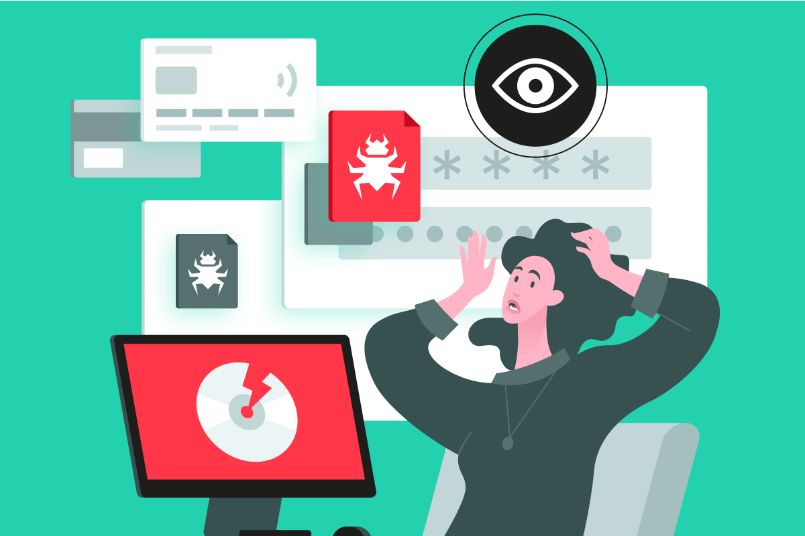

1. Introduction to Platform Security
Platform security is the foundation of protecting computing systems from threats at every layer — from hardware to applications. It ensures that resources are protected, data remains confidential, and systems operate reliably even in the face of cyberattacks. By studying platform security, we learn not only about the components of a computing platform but also the potential attack surfaces and best practices that strengthen trust in modern systems.
2. The Human Factor in Cybersecurity
Technology can be strong, but people remain the most vulnerable part of any security system. Human error, poor password habits, falling for phishing attacks, or insider threats can bypass even the most advanced defenses. This lesson focuses on the role of people in cybersecurity — from how attackers exploit trust and mistakes, to real-world cases like the PhilHealth Medusa attack in the Philippines. By raising awareness, training users, and applying good security practices, organizations can reduce risks caused by the “weakest link”: humans.
3. Virtualization Security
Virtualization is a cornerstone of modern IT infrastructure, enabling one physical server to host multiple virtual environments. This technology maximizes hardware utilization, reduces costs, and increases flexibility. At the same time, it introduces new risks such as hyperjacking, VM escape, and misconfiguration vulnerabilities. Learning about virtualization equips us with the knowledge to balance efficiency with security, making it essential for enterprise and cloud environments.

4. Platform Architecture
Platform architecture describes the layered structure of a computing system — from the physical hardware and firmware up to the operating system and applications. Each layer plays a unique role and can also introduce specific vulnerabilities. By comparing mobile, desktop, cloud, and virtualization platforms, we see how design choices impact security, performance, and usability. Special hardware like TPM and modern boot processes like UEFI enforce trust and resilience, making architecture a critical part of cybersecurity.